1前言 Introduction
1.1產品簡介 What It Is
「AS 面試溫習」是一個網頁版的抽認卡（Flashcard）溫習工具，專為準備屋宇署獲授權簽署人（Authorized Signatory，AS）面試的同事而設。
產品網址：as-exam-training.vercel.app（需要帳號登入，見 3.2 如何進入）
題庫由過往 60 份考卷紀錄歸納而成，整理為 329 張一問一答的卡。每張卡的答案均附有出處，可追溯至法例、作業備考或屋宇署守則。系統會按你每次的自評結果調整出題次序：不熟悉的題目出得密，已熟記的題目逐步減少。
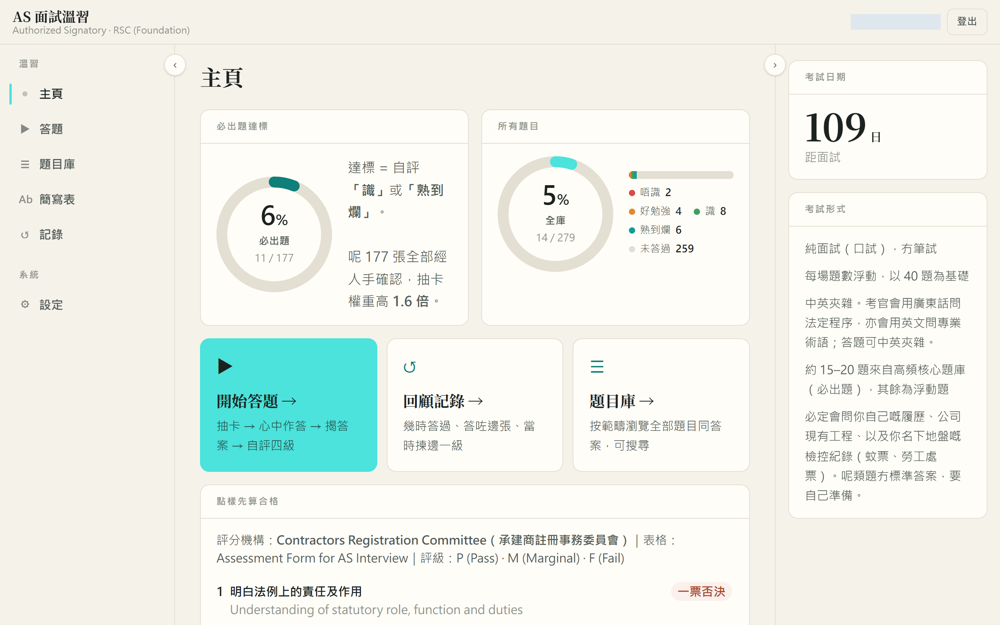
1.2適用對象 Who It Is For
- 準備註冊專門承建商（地基工程）［RSC(Foundation)］AS 面試的同事。
- 準備註冊一般建築承建商（RGBC）AS 面試的同事。題庫包含上蓋專屬題目，可按需要納入。
- 每日只有十多二十分鐘，希望用零碎時間有系統地溫習的人。
本工具只供受邀用戶使用，帳號由產品擁有人開設。
1.3關鍵名詞 Key Terms
| 名詞 | 意思 | 在哪裏見到 |
|---|---|---|
| AS | 獲授權簽署人（Authorized Signatory），代表註冊承建商就《建築物條例》事宜行事 | 全站 |
| RSC(F) | 註冊專門承建商（地基工程） | 設定、抽卡範圍 |
| RGBC | 註冊一般建築承建商 | 設定、抽卡範圍 |
| Aspect | 面試評分表的六個範疇，Aspect 1、2 為一票否決項 | 主頁、題目庫標籤 |
| 必出題 | 經人手確認、在考卷中高頻出現的題目，出題權重較高 | 卡片標籤、主頁進度 |
| 四級自評 | 看完答案後自評：「唔識」、「好勉強」、「識」、「熟到爛」 | 答題畫面 |
| 參考題 | 沒有標準答案的題目，例如公司意外率，只供提醒 | 題目庫 |
| 近兩年 % | 該題在最近 24 個月考卷中出現的比例 | 答案卡右上角 |
2產品價值 Why Use It
2.1解決的問題 Pain Points
準備 AS 面試時，一般會遇到四個困難：
- 考卷紀錄零散。 過往考卷由不同考生憑記憶寫下，字眼簡略、重複，難以歸納出「到底考甚麼」。
- 參考資料過多。 法例、規例、作業備考（PNAP、PNRC）及守則加起來超過一百份，難以判斷哪一份對應哪一題。
- 教材內容有誤。 坊間培訓教材有部分內容已經過時，例如條號已被新規例取代、罰款金額寫錯，考生很難自行察覺。
- 無法掌握進度。 溫習時熟悉與不熟悉的題目混在一起，花了時間重溫已經識的內容，弱項反而沒有溫到。
2.2用前與用後 Before & After
2.3使用場景 Use Cases
日常溫習。 每日開一節「加權混合」練習，20 題約需 15 分鐘。系統會自動把你答得不好的卡排得更前。
面試前一至兩星期。 改用「只練必出題」模式，集中處理高頻題目；配合主頁的必出題進度，確認全部達到「識」或「熟到爛」。
臨面試前幾日。 使用「專攻弱項」模式，只抽最近自評為「唔識」或「好勉強」的卡，逐一清除。
碎片時間。 在手機瀏覽器開啟，乘車或等候時做幾題；進度會自動同步到電腦。
3使用前準備 Before You Start
3.1所需條件 Requirements
- 電腦或手機，使用 Chrome、Edge 或 Safari 等現代瀏覽器。
- 穩定的網絡連線（本工具暫不支援離線使用）。
- 由產品擁有人開設的帳號。
3.2如何進入 Access
- 聯絡產品擁有人 Crimson，提供你用於登入的電郵地址。
- 產品擁有人開設帳號後，會把一次性密碼親手交給你。系統不會寄出任何註冊電郵。
- 打開網址 as-exam-training.vercel.app，以電郵及該密碼登入。
- 首次登入後，請立即到「設定」頁更改密碼（見 5.6 個人設定）。
3.3費用 Cost
免費。
4開始使用 Getting Started
4.1登入系統 Sign In
打開網址後會看到登入畫面。
- 在「電郵」欄輸入你的電郵地址。
- 在「密碼」欄輸入密碼。
- 按「登入」。
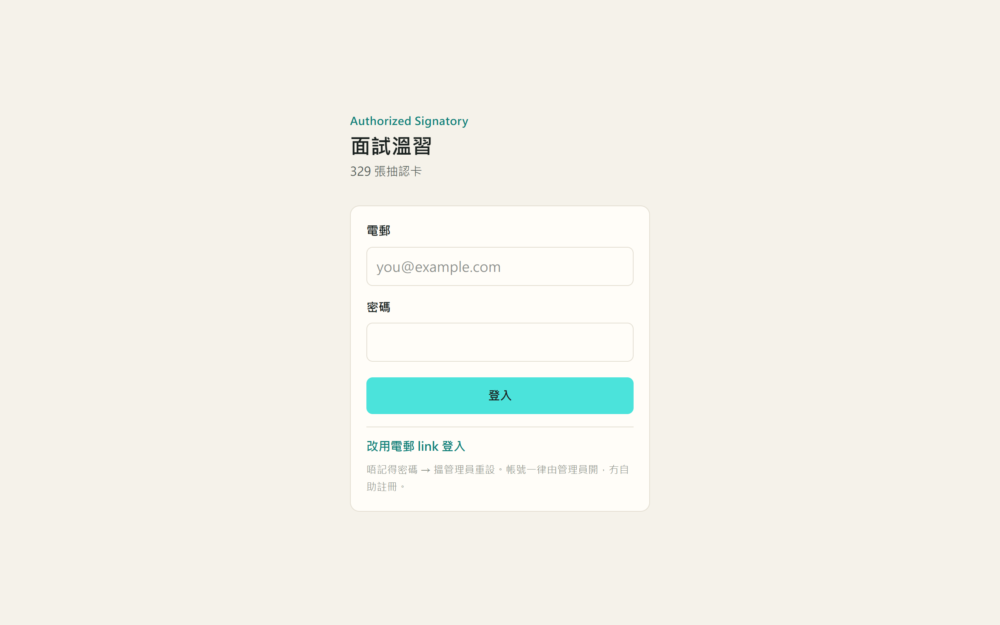
登入後會直接進入「主頁」，左側為導航列，右上角有「登出」按鈕。
系統沒有自助重設功能。請聯絡產品擁有人重設，你會收到新的一次性密碼。
4.2設定考科與考試日期 Set Up Your Profile
首次登入時，系統會問你兩條問題：考哪一科，以及是否知道考試日期。兩者都只是預設值，之後可以在「設定」頁修改。
- 選擇「地基（RSC Foundation）」或「一般建築（RGBC）」。這會決定預設抽卡範圍：選地基的話，上蓋專屬題目預設不會抽出。
- 如已知道考試日期，選「知道」並填上日期；主頁會顯示倒數日數。不知道的話選「仲未知」，之後再補。
- 按「開始溫習」。
如之後需要修改，到左側導航的「設定」：
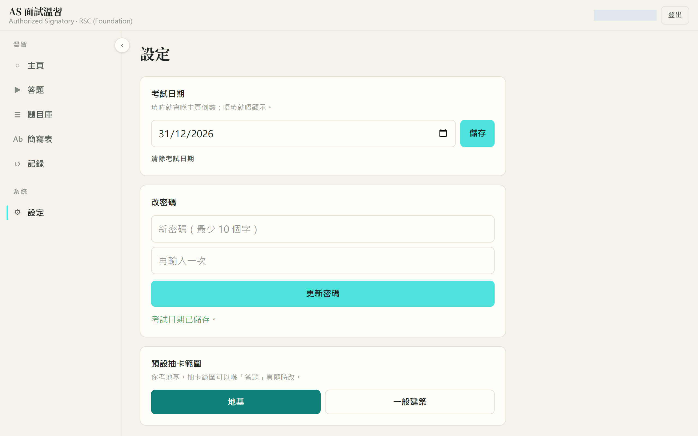
設定考試日期並按「儲存」後，會顯示「考試日期已儲存。」，主頁右側會出現倒數日數。
4.3認識主頁 The Home Page
主頁分為三部分：
- 兩個進度圓圖。 左邊是「必出題達標」，右邊是「所有題目」。「達標」的定義是最近一次自評為「識」或「熟到爛」。右邊另有四級自評的分佈。
- 三個功能入口。 「開始答題」、「回顧記錄」、「題目庫」。
- 合格準則。 列出面試評分表的六個範疇及合格條件。
Aspect 1 及 2 的題目數量最少，但任何一項評為 Fail 即整體不合格。溫習時應優先處理這兩項，題目庫以「★」標示。
4.4選擇練習模式 Choose a Practice Mode
按「開始答題」或左側導航的「答題」，進入練習設定。
- 選擇方式。
- 「加權混合」：全部卡按掌握度加權抽出，日常首選。
- 「只練必出題」：只抽經人手確認的必出題，適合面試前一至兩星期。
- 「專攻弱項」：只抽最近自評為「唔識」或「好勉強」的卡。
- 選擇題數。 10 題、20 題或 40 題。一場真實面試約問 40 題，其中 15 至 20 題出自必出題。
- 選擇抽卡範圍。 考地基的同事可選擇是否包括上蓋（rgbc-only）的卡。
- 按「開始（N 題）」。
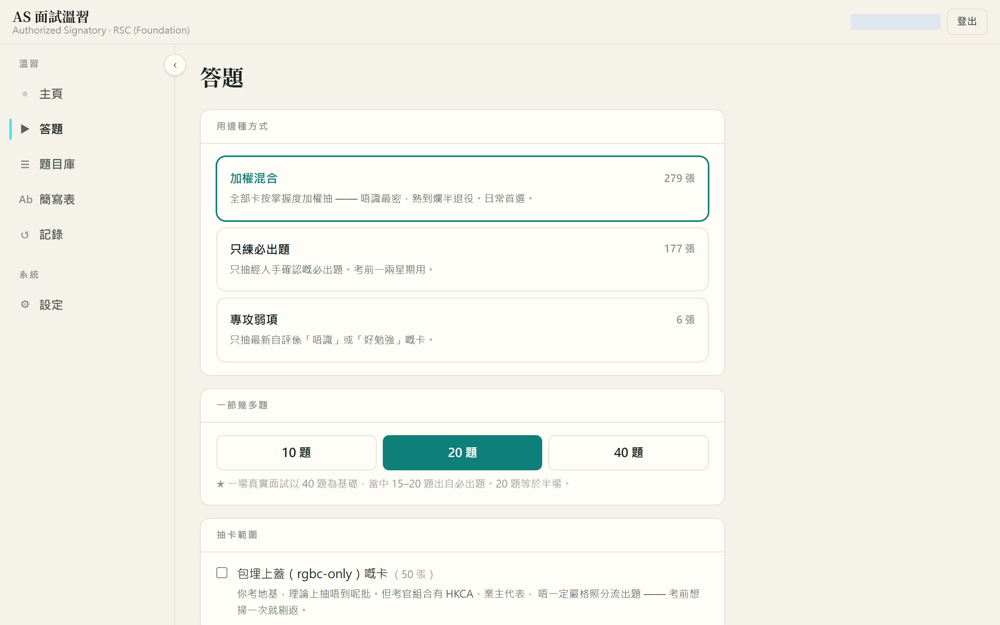
畫面切換至全屏答題模式，頂部顯示進度條及「01/10」之類的題號。
4.5作答與揭曉答案 Answer and Reveal
每張卡先只顯示題目，請在心中完整作答，再揭曉答案。
- 閱讀題目，在心中或低聲說出你的答案。
- 按「揭開答案」，或按鍵盤的空白鍵（Space）。
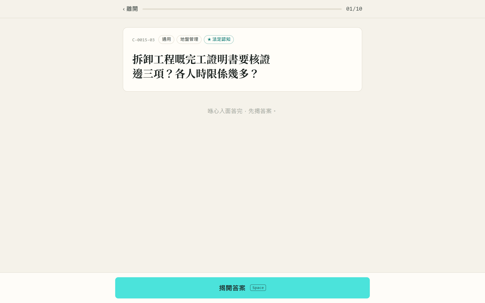
答案卡由上而下分為：本卡簡寫、答案、考生注意（中伏位）、出處，以及留意見的入口。答案卡右上角顯示「近兩年」出現比例。
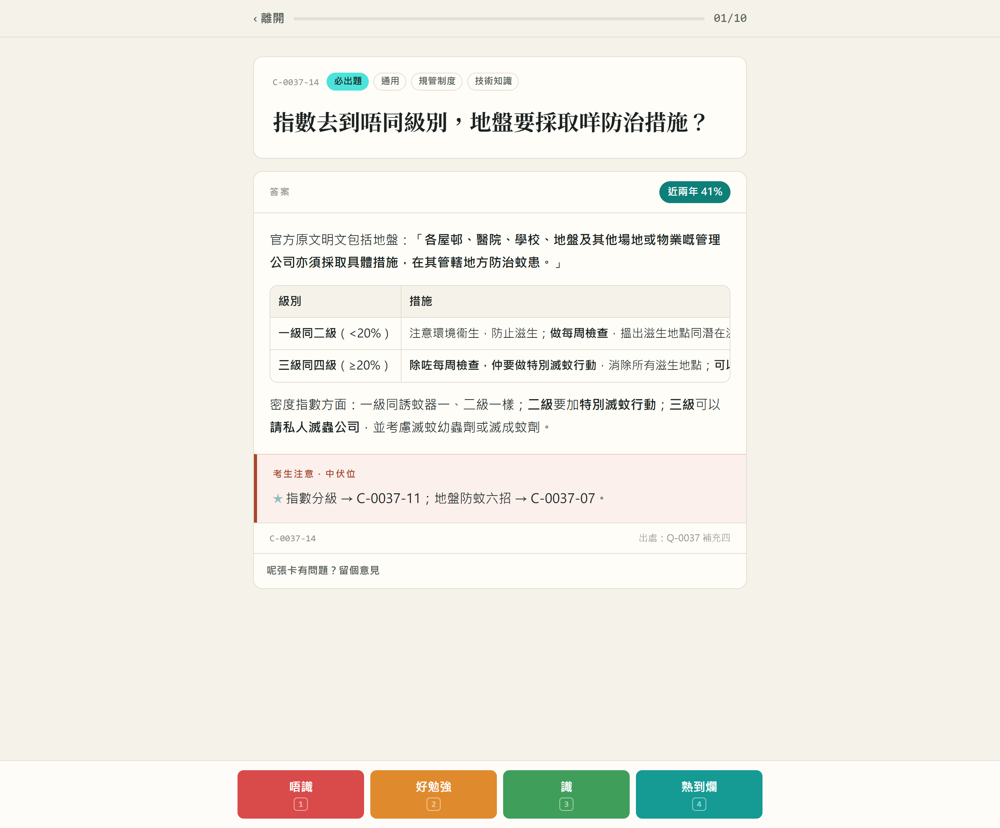
答案下方出現四個顏色按鈕：「唔識」、「好勉強」、「識」、「熟到爛」。
答案以「考生對考官口述」的第一人稱寫成，可以直接照讀練習。表格則保留，方便記憶數字。
4.6誠實自評 Rate Yourself
對照答案後，按實際表現選擇其中一級。桌面版可以用鍵盤數字鍵 1 至 4。
| 按鈕 | 何時選擇 |
|---|---|
| 唔識 | 答不出，或答錯關鍵內容 |
| 好勉強 | 大致方向正確，但漏了數字、條號或重點 |
| 識 | 答得完整，只有小瑕疵 |
| 熟到爛 | 可以流暢、完整地說出，包括數字和條號 |
你的選擇會決定這張卡日後出現的頻率：
自評偏高會令弱項卡太少出現，進度圓圖亦會失真。拿不準時，選較低的一級。
4.7查看節結報告 Session Summary
完成一節所有題目後，會顯示節結報告。
- 頂部顯示四級自評的數量。
- 「今節要補返」列出你評為「唔識」或「好勉強」的卡，這些卡的權重已經自動調高。
- 按「再嚟一節」繼續，或按「返主頁」查看最新進度。
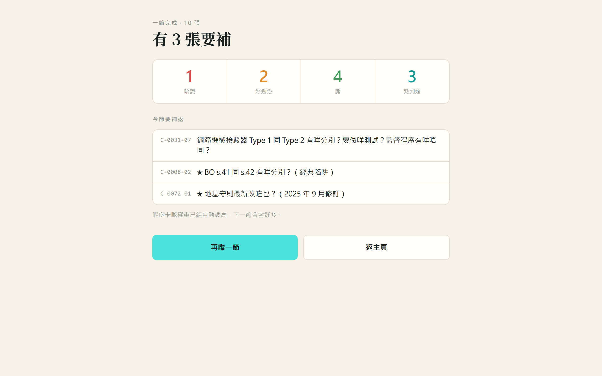
返回主頁後，兩個進度圓圖的數字已經更新。
5進階功能 Advanced Features
5.1題目庫與搜尋 Question Bank
「題目庫」讓你瀏覽全部題目及答案，不計入進度。
- 搜尋欄可以搜尋題目、答案，連考官在考卷中的原本問法都能找到，例如輸入「BO 精神」。
- 評分範疇按 Aspect 篩選，「★」代表一票否決項。
- 範疇按 12 個知識範疇篩選，例如「地基工程」、「地盤安全」。
- 勾選「只睇必出題」可只顯示必出題。
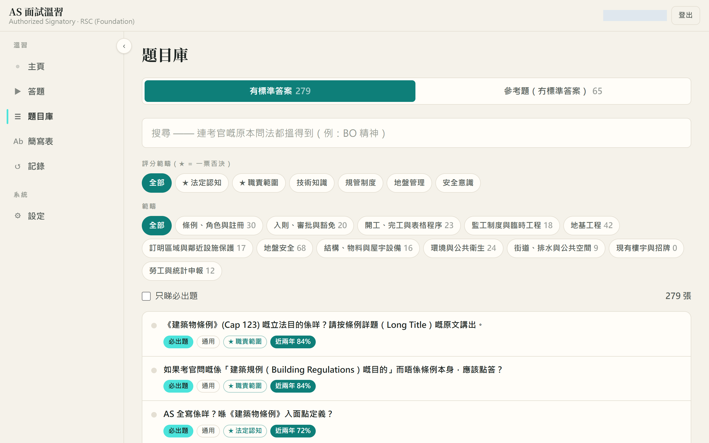
5.2參考題 Reference Questions
題目庫的第二個分頁「參考題（冇標準答案）」收錄兩類題目：
- 公司／個人特定題。 例如「公司現時千人意外率？」。答案是你所屬公司的實際數字，題庫無法提供，請在考前向公司安全部門索取並記熟。
- 未核實項目。 官方原文未收錄、答案未能確定的內容。考官追問時，坦白表示會查證，比說出不肯定的數字更好。
這些題目不會在練習中抽出，亦不計入進度。
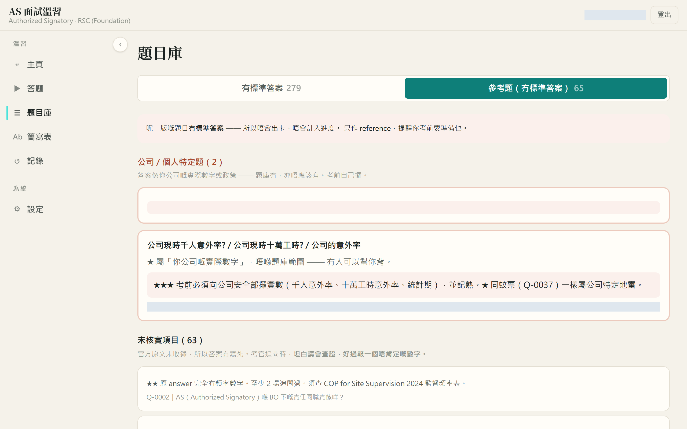
5.3簡寫對照 Abbreviations
題目及答案經常出現簡寫，例如 RSE、TCP、BA14。你可以用三種方式查閱：
- 本卡簡寫列。 答題時，題目下方會列出本卡用到的簡寫；揭答案前只列題目中的簡寫，避免提早透露答案。
- 就地查閱。 文字下有虛線的簡寫，在桌面版滑鼠停留、在手機按一下，會彈出說明小卡。
- 簡寫表頁面。 左側導航的「簡寫表」收錄 248 條，可搜尋及按類別篩選。
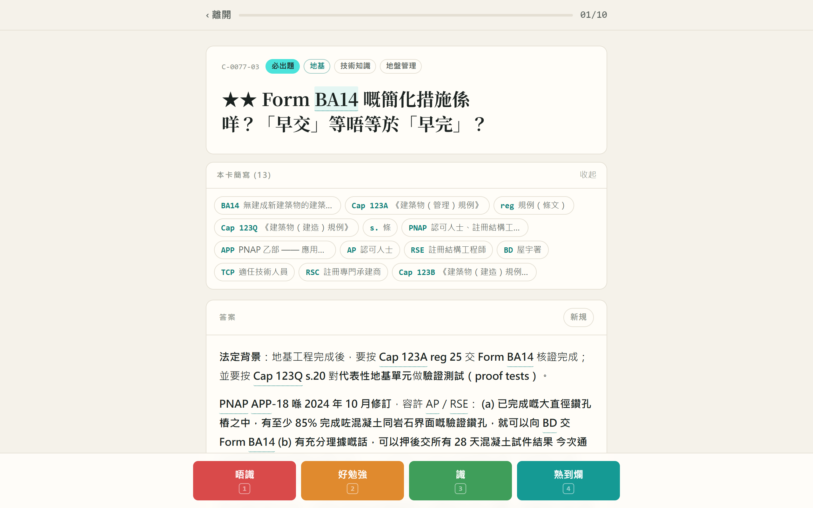
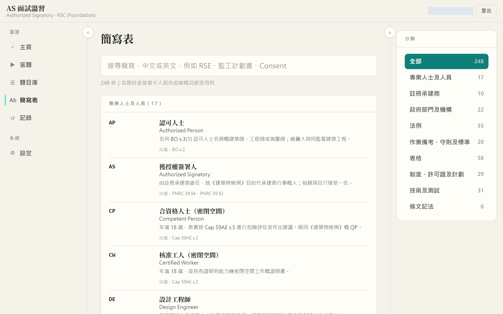
5.4溫習記錄與弱項 Records
「記錄」頁顯示：
- 累計自評次數及接觸過的卡數。
- 最近 14 日每日的答題數量。
- 「弱項排行」：最近自評為「唔識」或「好勉強」的卡，可以作為下一節「專攻弱項」的參考。
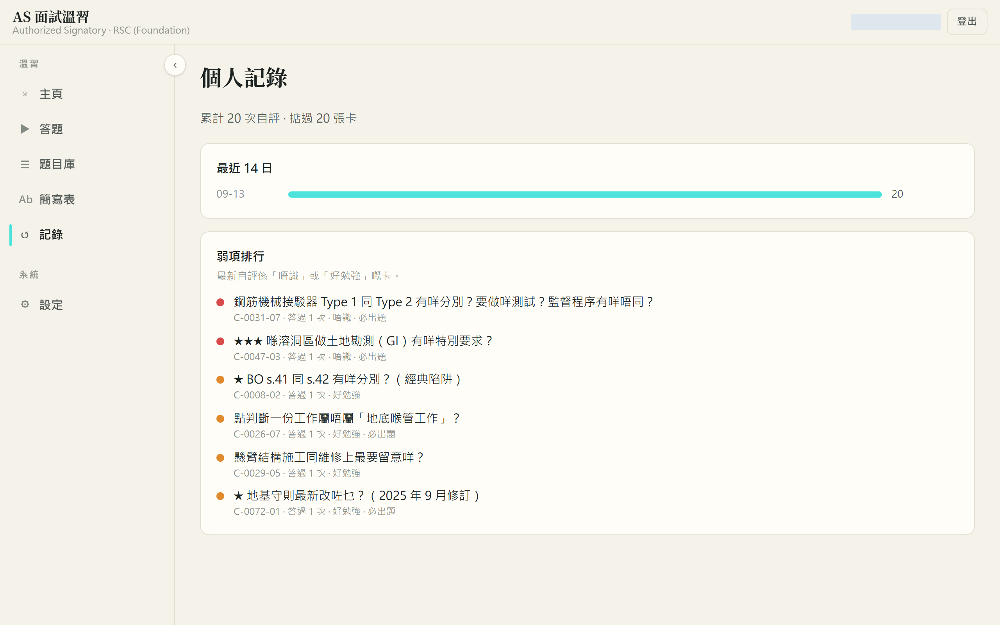
5.5對答案提出意見 Comment on an Answer
如果你認為某張卡的答案有問題，可以直接在答案卡底部留言，產品擁有人會收到並跟進。
- 揭開答案後，捲動至答案卡底部，按「呢張卡有問題？留個意見」。
- 選擇意見類別：「答案唔夠好」、「數字或條號信唔落」、「問法唔清楚」或「其他」。
- 輸入具體內容，例如哪一個數字、你認為正確的出處。
- 按「交意見」。
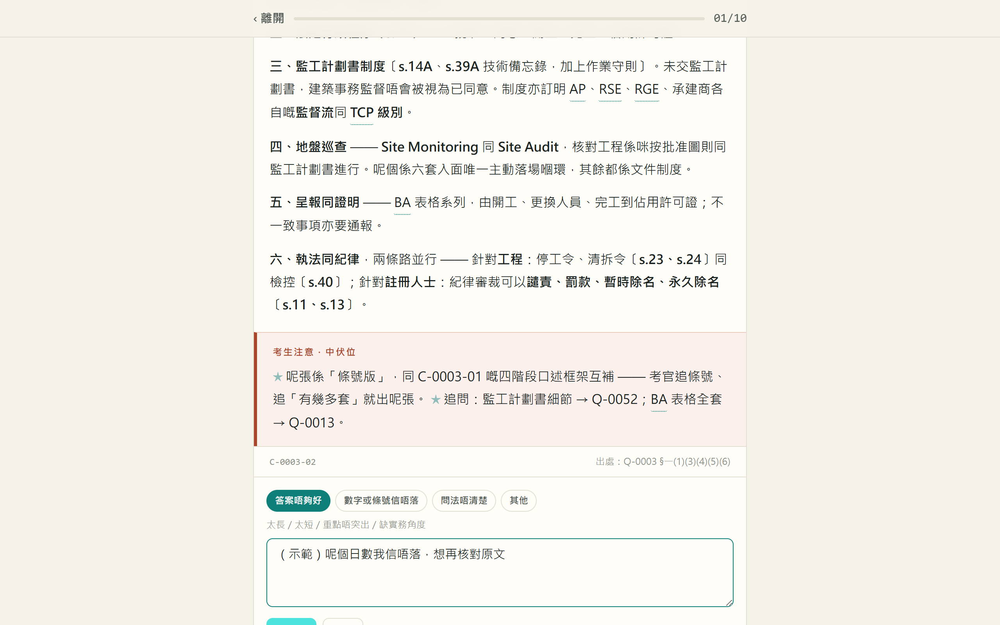
提交後，該卡下次出現時會顯示「（你之前留過）」。
5.6個人設定 Settings
左側導航的「設定」頁可以：
- 修改或清除考試日期。
- 更改密碼（最少 10 個字元）。首次登入後請立即更改。
- 更改預設抽卡範圍（地基或一般建築）。
5.7加至手機主畫面 Add to Home Screen
在手機瀏覽器打開網址並登入後，可以把網頁加至主畫面，之後像應用程式一樣開啟：
- iPhone（Safari）： 按分享按鈕，選「加入主畫面」。
- Android（Chrome）： 按右上角選單，選「加到主畫面」。
登入狀態會保留，無需每次重新登入。
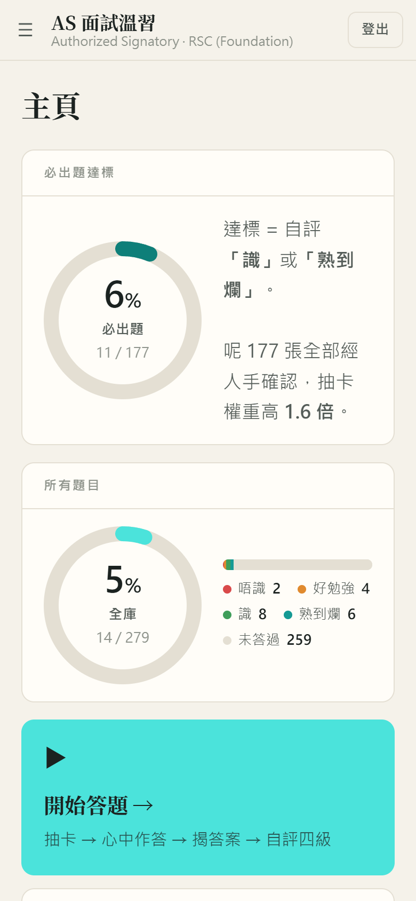
6疑難排解 Troubleshooting
6.1常見問題 FAQ
問：為甚麼同一題經常出現？
答：你最近對該題的自評可能是「唔識」或「好勉強」，系統會提高它的出現機會。當你評為「識」或「熟到爛」後，出現次數會明顯減少。另外，必出題的出現機會本身較高。
問：必出題是怎樣決定的？
答：先按題目在 60 份考卷中的出現頻率篩選，再由產品擁有人逐題人手確認。系統本身不會自行把題目設為必出題。
問：答案與我在培訓班學到的不同，應該相信哪一個？
答：題庫以法例原文及屋宇署官方文件為準。部分培訓教材已經過時或有錯漏，答案卡的「考生注意」會提示已知的分歧。如仍有疑問，請使用 5.5 對答案提出意見 留言。
問：可以離線使用嗎？
答：暫時不可以。答題及自評需要網絡連線才能儲存。
問：我考地基，為甚麼題目庫會見到上蓋的題目？
答：題目庫顯示全部題目以供參考，但練習時預設不抽上蓋專屬的卡。你可以在練習設定的「抽卡範圍」自行納入。
6.2出錯時的處理 When Things Go Wrong
| 現象 | 可能原因 | 處理方法 |
|---|---|---|
| 登入時顯示密碼錯誤 | 密碼輸入錯誤，或已被重設 | 確認大小寫；仍然失敗請聯絡產品擁有人重設 |
| 主頁數字沒有更新 | 自評未能即時上傳 | 重新整理頁面；系統會在下次開啟時自動補交未上傳的自評 |
| 選「專攻弱項」時顯示沒有卡 | 你暫時沒有自評為「唔識」或「好勉強」的卡 | 先用「加權混合」完成幾節 |
| 手機上看不到左側導航 | 手機版把導航收在選單內 | 按左上角的「☰」按鈕 |
| 登入後每次都要求重新設定 | 設定未能儲存 | 重新整理後再試一次；如持續出現，請聯絡產品擁有人 |
7意見反饋 Feedback
對題目或答案有意見： 請直接在答案卡底部留言（見 5.5 對答案提出意見）。系統會記錄是哪一張卡、由哪一個帳號提出，處理起來最快。
對這份指南有意見： 例如步驟寫得不清楚、截圖與實際畫面不符，請電郵至 ，或按頁面右下角的「對本節有意見」按鈕，系統會自動填上章節編號。
一般會在三個工作天內回覆。